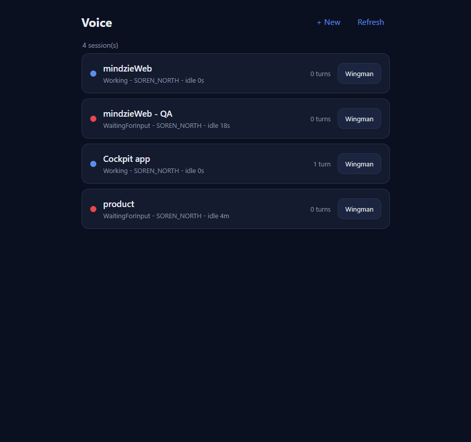
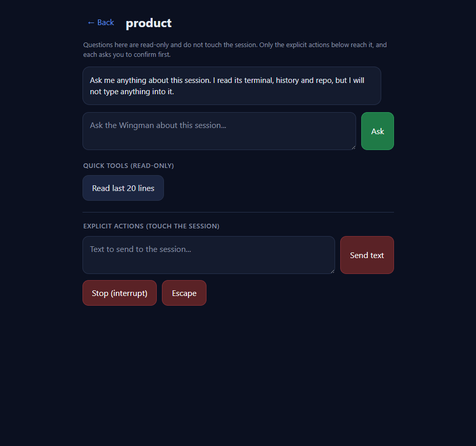
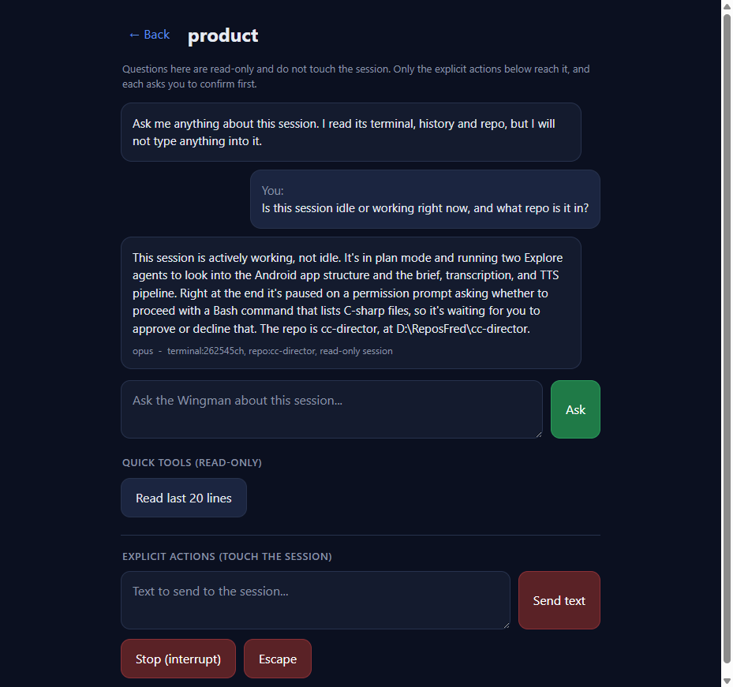
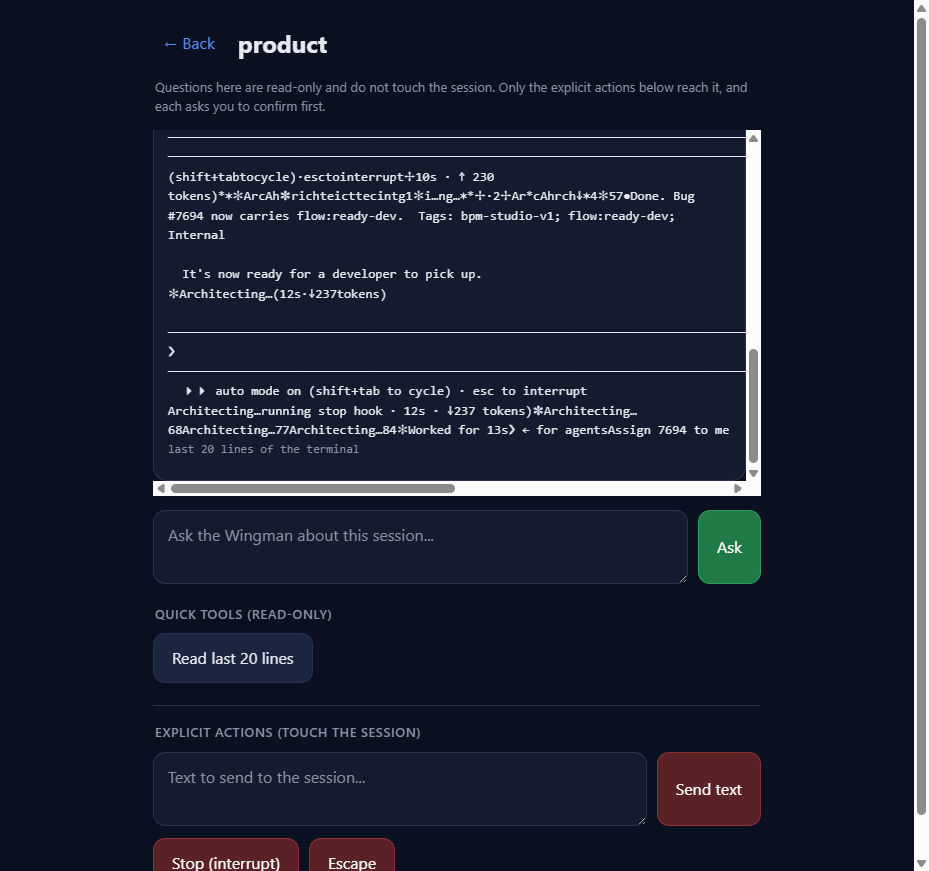
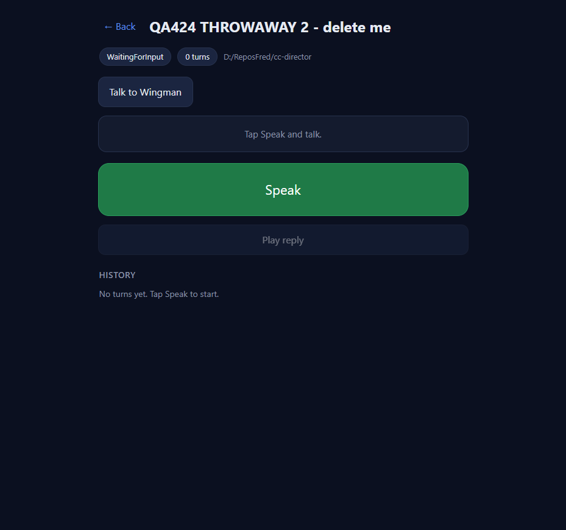
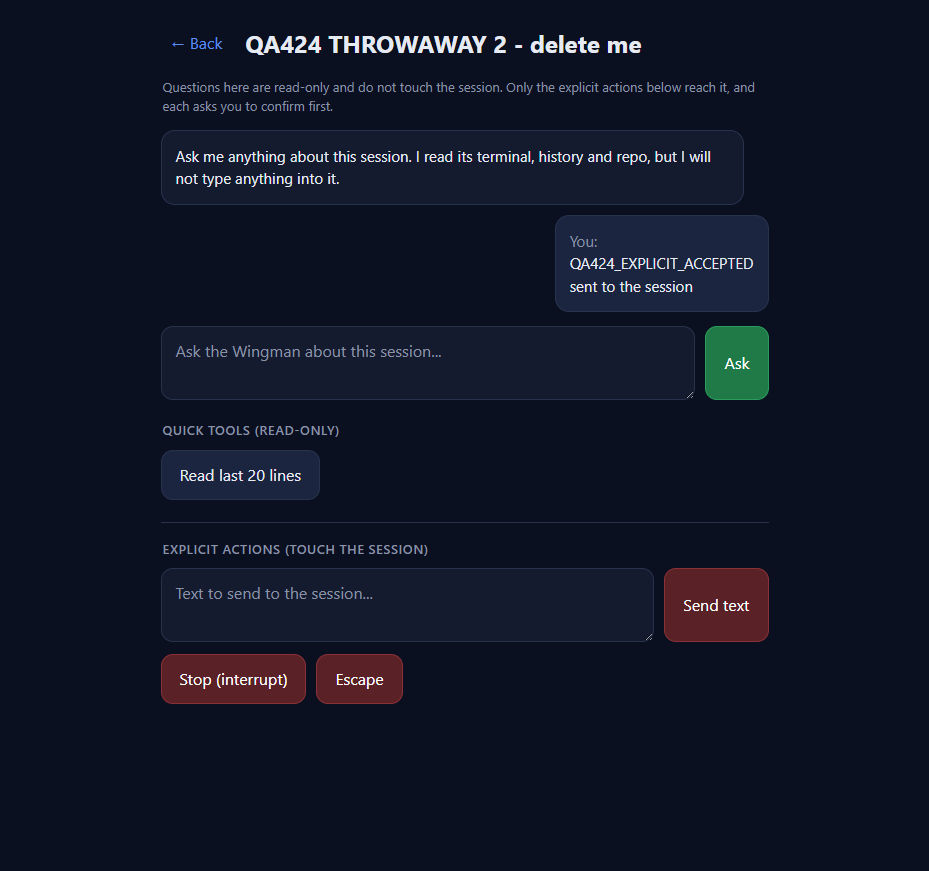

wwwroot/pages/voice/*, additive). No backend, security,
or architecture surface touched — no CenCon doc update required. Cockpit project builds clean
(0 warnings, 0 errors).
The change is a Cockpit static-page feature (/voice). The live Gateway runs the OLD build
that does not yet have these files, so a loopback QA proxy served the PR branch's actual
index.html/voice.js/voice.css while forwarding all
/sessions and /directors API calls to the live Gateway (7878). The UI was
driven with cc-playwright (trusted events). All backend behaviour (ask / buffer / prompt / interrupt /
escape) was additionally probed directly with curl against the live Gateway. A disposable
test session was used for every state-changing test and DELETED afterwards; the user's 4 real sessions
were never altered (read-only ops only).
| # | Criterion | Expected | Actual (independently observed) | Result |
|---|---|---|---|---|
| 1 | "Talk to Wingman" entry points on BOTH list rows and the session view open the Wingman Chat. | A "Wingman" button on every row; a "Talk to Wingman" button in the session view; each opens the chat for that session. | List: 4 rows, 4 button.s-wingman ("Wingman"); clicking the "product" row's button opened the chat (wingman-view visible, title="product"). Session view: opened a session row, "Talk to Wingman" button present; clicking it opened the chat bound to that session. See 01, 02, 05. |
PASS |
| 2 | Typing a question and sending shows the answer from POST /sessions/{id}/wingman/ask. |
A free-text question returns a contextual answer. | Asked "Is this session idle or working right now, and what repo is it in?" — got a correct, contextual answer (described the running Explore agents + a pending permission prompt) with meta opus - terminal:262545ch, repo:cc-director, read-only session. See 03. |
PASS |
| 3 | "Read last 20 lines" shows terminal output from GET /sessions/{id}/buffer?lines=20. |
Last terminal lines shown. | Clicking "Read last 20 lines" produced a monospace tool bubble labeled "last 20 lines of the terminal" with real terminal content. Direct curl on buffer?lines=20 returned {sessionId,totalBytes,newCursor,text}. See 04. |
PASS |
| 4 | Send text / interrupt / escape each require an explicit confirm and only then call the matching endpoint. | Each action prompts a confirm; nothing reaches the session unless the user accepts. | Confirm messages captured verbatim (see below). Send with confirm CANCELLED: session stayed WaitingForInput at 2493 bytes (no call). Send with confirm ACCEPTED: POST /prompt fired, bytes 2493→6417, state → Working, "sent to the session" bubble shown. Interrupt/Escape confirm-CANCEL made no call. See 06. |
PASS |
| 5 | ISOLATION: while an agent is mid-turn, asking questions does NOT change session state; only an explicit send/stop does. | Read-only ops leave activity/state & byte-length unchanged; only an explicit confirmed action changes them. | Idle disposable session, baseline frozen at 2446 bytes / WaitingForInput (stable with no action). After wingman/ask: still 2446 / WaitingForInput. After 3x buffer?lines=20: still 2446 each time. Only the explicit confirmed /prompt moved it (2446→6531→10397, → Working). Asymmetry proven byte-for-byte. |
PASS |
Send text: "Send this text to the session? It WILL reach the agent.\n\n<text>" Interrupt: "Stop (interrupt) the session? This sends Ctrl+C to the agent." Escape: "Send Escape to the session?"
=== ISOLATION TEST (idle disposable session) === T0 baseline: WaitingForInput 2446 T0b (no action, +3s): WaitingForInput 2446 <- stable wingman/ask (read-only): WaitingForInput 2446 <- UNCHANGED (answer returned, status ok, model opus) buffer?lines=20 read #1: WaitingForInput 2446 buffer?lines=20 read #2: WaitingForInput 2446 buffer?lines=20 read #3: WaitingForInput 2446 --- EXPLICIT /prompt (confirm accepted) --- after send: Working 6531 after send (+4s): Working 10397 <- only an explicit send advanced it --- /interrupt -> HTTP 200 ; /escape -> HTTP 200 ---
wwwroot/pages/voice/*, additive only (+245 lines). No backend, no security surface, no architecture change → no docs/cencon/ manifest update needed./voice flows (session list, open session, history from #423) still render — the Wingman view is a new sibling section gated by show("wingman"); existing views unaffected.dotnet build src/CcDirector.Cockpit/CcDirector.Cockpit.csproj → Build succeeded, 0 warnings, 0 errors.01 - List rows each carry a Wingman button

02 - Wingman Chat opened from a list row (read-only intro)

03 - Free-text question answered via wingman/ask (with model + context meta)

04 - "Read last 20 lines" shows live terminal output via buffer?lines=20

05 - Session view "Talk to Wingman" entry point

06 - Explicit Send (confirm accepted) reaches the session; box cleared, "sent to the session" bubble
